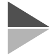
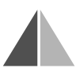

タイトル
コメント
トレース元図形
選択して下さい
パターンリスト表示
ファイルから読み込み
手書きで作成
もう一度
変形
オリジナル
右へ90度回転
左へ90度回転
180度回転
上下反転
左右反転
オリジナルにする
保存
鏡面動作
上下
左右
トレース後に自動判定
トレース線の太さ
0
10
20
30
40
50
60
70
80
90
%増し
このダイアログを閉じた後、クリックした所に文字を書き込みます。
ＭＳ Ｐゴシック
ＭＳ ゴシック
ＭＳ 明朝
HG正楷書体-PRO
fantasy
cursive
fantasy
cursive
fantasy
monospace
Osaka-Mono
120px
240px
400px
600px
900px
標準
bold
italic
リンクするパッド（操作画面を開くには）
スマートフォンは
QRコードを読み取ってブラウザを起動
パソコンは
QRコードをクリックして別画面でブラウザを起動
0%
選択してください
トレース元指定
接続先指定
トレース設定
このページの使い方
 
スコア
0
点
0
/
0
ピクセル
判定
トレース元図形を確定にするとスコアの評価が始まります。
もう一度
フリーハンド
直線
三角
矩形
楕円
テキスト
消しゴム
選択範囲を消去
カラーピッカー
確定
線の太さ
1pt
5pt
10pt
20pt
50pt
先端
丸
四角
無し
文字サイズ
6pt
12pt
24pt
48pt